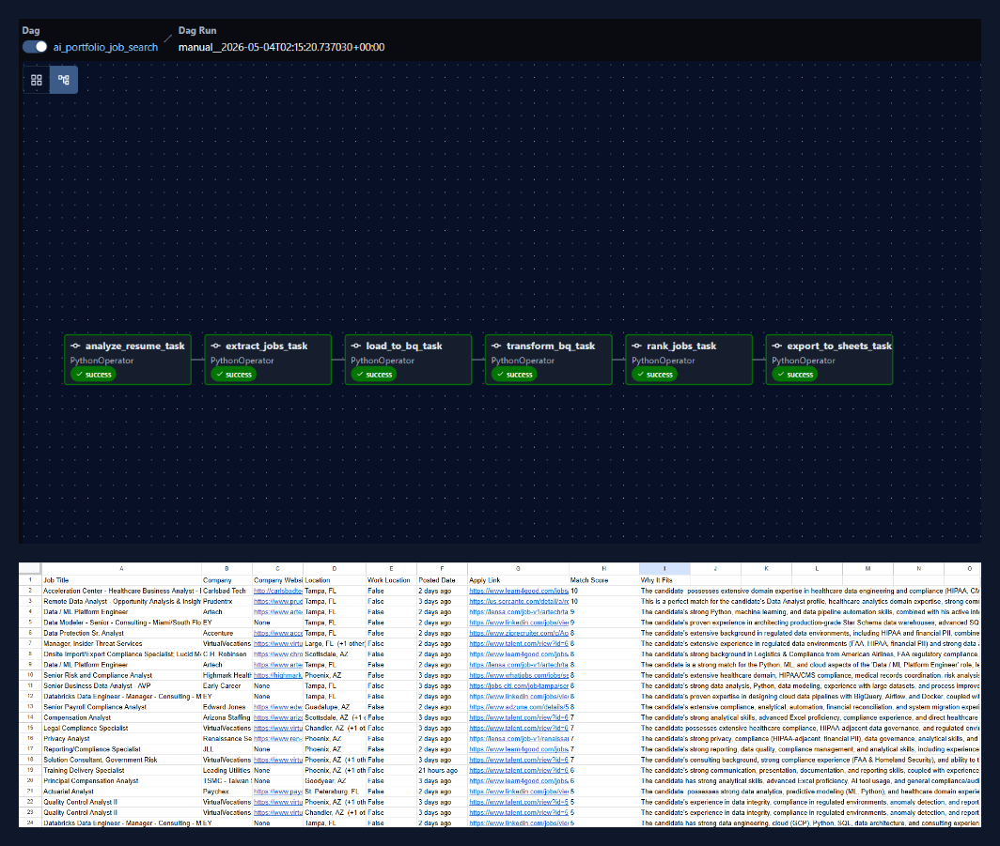

AI-Powered Job Search
Pipeline
> An end-to-end Airflow orchestrated pipeline that automates job searching. Utilizing Gemini 2.5 Flash agents to analyze resumes, extract JSearch API data, transform in BigQuery, and export highly targeted, scored job leads directly to Google Sheets.
Architecture
6-Task
Airflow DAG Pipeline
AI Agents
Gemini 2.5
Analyzer & Strategist
Scoring System
1–10
Match threshold ranking
Data Lake
BigQuery
Medallion ELT Pattern
Pipeline Architecture

Orchestrated with Apache Airflow (Docker / Celery), the pipeline extracts raw API responses, loads them into BigQuery, flattens and deduplicates the records, and applies a Gemini Strategist agent to score and rank jobs against a parsed resume.
Key Engineering Decisions
AI Agents as Markdown System Prompts
Both Gemini agents (Analyzer and Strategist) live in include/agents/ as .md files rather than hardcoded strings. Prompts are version-controlled, diff-able, and editable without touching Python — bringing a SQL-first (dbt-like) philosophy to AI prompt engineering.
Airflow Params as a Pipeline UI
The DAG utilizes typed Param inputs with enums, min/max constraints, and null handling to generate a trigger form directly in the Airflow UI. Resume file, location, work type, and API page depth are dynamically configurable at runtime, allowing non-technical users to execute searches effortlessly.
Run ID Isolation for Concurrent Execution Safety
To guarantee safe concurrent runs, each DAG execution injects Airflow's run_id into every scored job record before BigQuery insertion. The Google Sheets export then filters exactly on WHERE airflow_run_id = current_run_id, preventing data cross-contamination.
Data Architecture (The "How")
Two-Stage BigQuery Landing
Following Medallion architecture patterns, raw API responses are loaded into search_queries before being flattened via SQL into a clean raw_jobs table. This preserves the original API payload for debugging and reprocessing without wasting API calls.
Three-Layer Pytest Coverage
The pipeline implements comprehensive testing: test_dag_integrity.py verifies DAG structure, test_pipeline_functions.py unit tests ETL helpers with mocked GCP calls, and test_live_api.py executes actual JSearch queries. All tests can run independently of the full Docker stack.
Technical Toolkit
Project Summary
By treating the job search as an ELT problem, this project showcases modern data engineering skills—managing external API pagination, structuring data in a cloud warehouse, incorporating Generative AI directly into a pipeline, and orchestrating everything with Airflow.
Implementation Highlights
01. BigQuery Flattening & Deduplication
Using JSON_EXTRACT_ARRAY and JSON_VALUE to parse nested API responses, combined with a window function (ROW_NUMBER()) to guarantee distinct job_id records.
CREATE OR REPLACE TABLE `job_data.raw_jobs` AS
WITH flattened AS (
SELECT
extraction_timestamp,
search_query,
JSON_VALUE(job, '$.job_id') AS job_id,
JSON_VALUE(job, '$.employer_name') AS employer_name,
JSON_VALUE(job, '$.job_title') AS job_title,
JSON_VALUE(job, '$.job_posted_at') AS job_posted_at
FROM `job_data.search_queries`,
UNNEST(JSON_EXTRACT_ARRAY(data)) AS job
WHERE job IS NOT NULL
),
deduped AS (
SELECT *,
ROW_NUMBER() OVER (
PARTITION BY job_id
ORDER BY extraction_timestamp DESC
) AS rn
FROM flattened
WHERE job_id IS NOT NULL
)
SELECT * FROM deduped WHERE rn = 1;02. Airflow UI Parameterization
Injecting constraints and UI elements using the Airflow `Param` class, making the DAG robust and accessible without touching Python.
with DAG(
dag_id='ai_portfolio_job_search',
schedule=None,
params={
"resume_filename": Param(
"Michael_Campbell_Healthcare_Analytics.md",
type="string"
),
"location_type": Param(
"Any",
type="string",
enum=["Any", "Remote", "Hybrid", "On-site"]
),
"pages_per_query": Param(
1,
type="integer",
minimum=1,
maximum=3
)
}
) as dag:
# Tasks define logic...